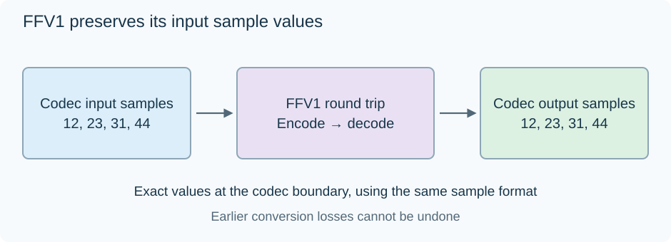

FFV1 Lossless Video
FFV1 preserves the sample values supplied to its encoder. Its compression comes from prediction and compact coding of exact corrections, rather than rounding away the parts that require more bits.

The equality is between codec input and reconstructed output in the same sample representation.
Calculate the specified predictor
For an ordinary 8-bit sample example, let:
l, the reconstructed left neighbor, be 40.t, the reconstructed upper neighbor, be 42.tl, the upper-left neighbor, be 41.
FFV1's median predictor is:
median(l, t, l + t − tl).
Here the three candidates are 40,42,41, so the median is 41. If the actual sample is 44, the encoded residual is 44 −41 =3. Decode that exact residual and add it to the same predictor: 41 +3 =44.
The local difference estimate can adapt to edges. With left 40, top 70 and upper-left 30, the extrapolated candidate is 80. The median of 40, 70 and 80 is 70, so the predictor stays within the range supplied by the two immediate neighbors.
The values demonstrate the specified ordinary-sample rule. The RFC defines separate handling for certain 16-bit coding cases and for slice borders.
Use context to code the residual
Nearby sample differences describe whether a region is smooth, changing gradually, or crossing an edge. FFV1 uses such context information to select coding behavior for residuals.
A smooth area can contain many predictable small corrections. The coder can describe those common events compactly. Grain or noise leaves less predictable residual data and may require more bits.
Either way, the correction is retained exactly. A different compression result does not select a different decoded picture quality.
The lossless coding example illustrates this principle with a small reversible prefix rule. FFV1's actual range/Golomb coding and context rules are defined in its specification rather than by that toy code.
Slices and coding state
Version 3 organizes a frame into slices with relevant headers, sample content and footer information. Dividing the picture provides independent regional work and a useful boundary for error checking.
The decoder also needs configuration and entropy-coder state. An FFV1 keyframe initializes the applicable coding states. In this format, “no temporal sample prediction” should not be confused with “any packet can be decoded without its coding configuration or state.”
RFC 9043 defines versions 0, 1 and 3, including how version 3 configuration is carried by supporting containers such as Matroska. That supplies the information needed to interpret each coded frame's samples.
Verify reconstruction and integrity separately
| Check | Question it answers |
|---|---|
| Compare decoded samples with the encoder input | Did this round trip preserve the same values? |
| Validate the configuration CRC | Is the stored configuration consistent with its checksum? |
| Validate enabled version 3 slice CRCs | Are the coded slice bytes consistent with their checksums? |
A CRC detects corruption; it does not contain the missing sample information needed to repair an arbitrary damaged slice.
If a source was resized before FFV1 encoding, the exact round trip preserves the resized array. Place the sample comparison at the encoder's actual input to verify that intended preservation boundary.
This makes an FFV1 master useful as a stable source for future viewing conversions: its decoder restores the retained samples, and each derivative begins from that defined input rather than from an earlier lossy delivery copy.
See Also
- Lossless Video Compression
- Video Generation Loss
- Lossy and Lossless Compression
- How Video Codecs Affect Playback Compatibility